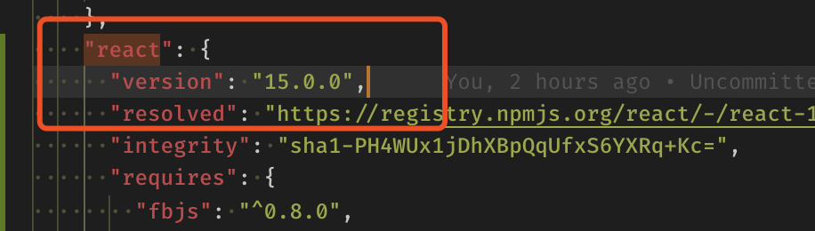
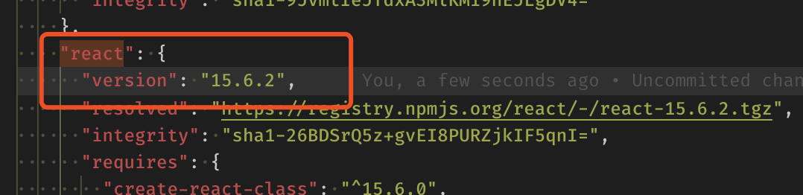
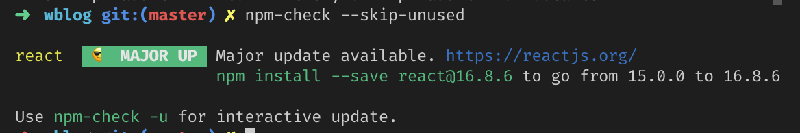
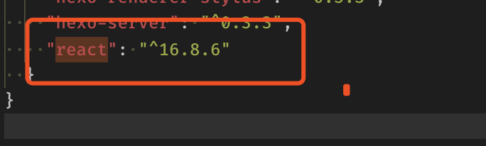
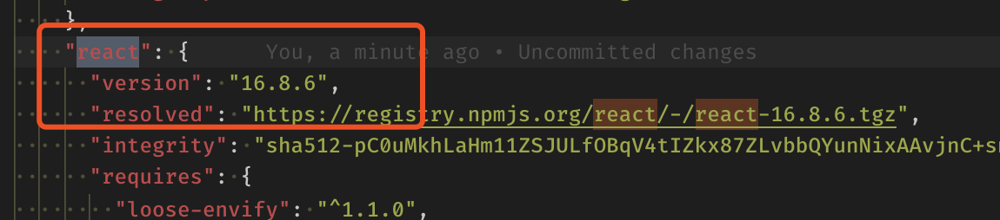
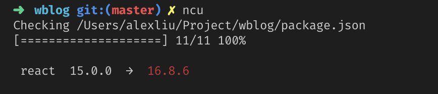
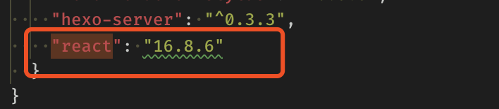

npm 包更新总结
常见的包更新方法有这么几种：
npm update
这个方法是 npm cli 自带的方法。
在开发的时候，经常会遇到 package.json 里的一些包很久不会更新的情况，你想升级下包的版本，笨一点的方法是挨个修改版本号然后 npm install 下。很费劲，这个时候可以考虑使用 npm update
实例
假设我们现在项目需要依赖 React，版本是 15.0.0：
1 | "react": "15.0.0" |
我们用 npm update 做个升级：
1 | $ npm update react |
运行完之后我们打开 package-lock.json 看看，发现 React 无任何变化，依旧是 15.0.0：

为什么呢？我们看下官方文档：
This command will update all the packages listed to the latest version (specified by the tag config), respecting semver.
也就是说 npm update 的更新策略完全尊重语义化版本规范的。示例中 React 的版本是写死的15.0.0，所以 npm update 不会有任何变化。
我们把 react 的版本号改写一下：
1 | "react": "^15.0.0" |
然后运行：
1 | $ npm update react |
运行完之后我们打开 package-lock.json 看看，发现 React 版本已经变化了：

此时有个疑问，如何想把 React 直接升级到 16 版本？可以这样：
1 | "react": "*" |
1 | $ npm update react |
Tip: 但这样的版本号策略很不实用，抛弃。
npm-check
install
1 | $ npm install -g npm-check |
usage
具体使用方法看官方文档，这里只说几个常用的方法：
1 | # 查找需要更新的包 |
我们把 react 的版本再更新回之前的样子：
1 | "react": "15.0.0" |
然后运行：
1 | # 查找需要更新的包，忽略掉没有使用的包的提示 |
它会提示你 react 有更新的版本了 16.8.6 to go from 15.0.0 to 16.8.：

现在我们来更新 React：
1 | # 更新所有的依赖项，没有任何提示 |
运行完之后，打开 package.json 和 package-lock.json ，发现 React 的版本已经从 15.0.0 更新到最新的包了：


npm-check-updates
这个包的优势是将前两者结合在一起：
- 可以指定是否尊重语义化版本规范
- 可以忽略语义化版本规范
install
1 | $ npm install -g npm-check-updates |
usage
1 | $ ncu |
1 | $ ncu -u |
安装好之后，我们把 React 复原回 15.0.0 版本，我们来检查那些包可以更新：
1 | $ ncu |
会提示 react 可以更新 16.8.6 版本：

然后我们更新包：
1 | $ ncu -u |
运行完之后我们打开 package.json 发现版本已经更新了：

但是此时 package-lock.json 还没有更新，所以还需要运行一下:
1 | $ npm install |
npm-check-updates 也可以指定某一级别的版本力度更新（小版本号，修订号）。
–semverLevel find the highest version within “major” or “minor”
小版本号更新
1 | # react 15.0.0 → 15.6.2 |
修订号更新
1 | # react 15.0.0 → 15.0.2 |
总结
- npm update 更新完全尊重
package.json里的语义化版本规范的。 - npm-check 可以很方便的更新到包的最新版本。
- npm-check-updates 可以控制更新到任意版本力度的更新。但是要注意，需要运行一次安装。
开发的时候推荐 npm-check-updates 。